DesktopIniManager v4.2.0
操作マニュアル
導入・更新
Windows 10 / 11（x64）、.NET 10 Desktop Runtime（x64）が必要です。GitHubの配布ZIPはDesktopIniManager-v4.2.0-win-x64.zip、Vector向けは32byte制限のためDIM-v4.2.0-win-x64.zipです。ZIPを新しいフォルダーに展開し、DLL、JSON、Assets、Languagesを維持してDesktopIniManager.exeを起動します。
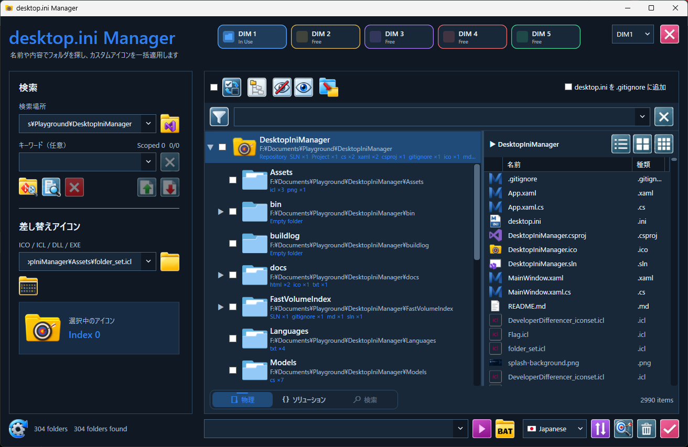
メイン画面・フォルダー解析
Targetに物理フォルダーまたはSolutionを指定します。選択フォルダー直下のファイルを白文字で先に表示し、配下のファイルを灰色で表示します。ルートが1つのツリーではルート行を固定表示します。全チェック／解除、反転、展開／折りたたみ、フィルター、表示サイズ変更に対応します。
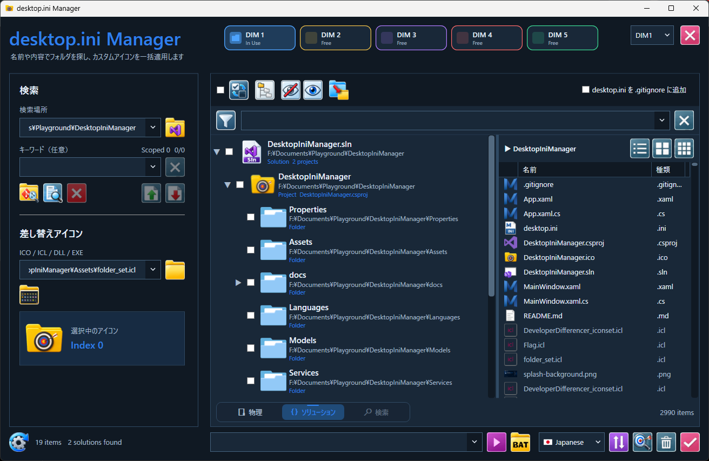
ファイル検索
ファイル名とフォルダー名を検索対象とし、ヒットの強調と件数表示に対応します。チェックしたフォルダー配下をScoped File Search／Scoped Grepの対象にできます。複数ファイル選択とDIFF VIEWでの比較に対応します。
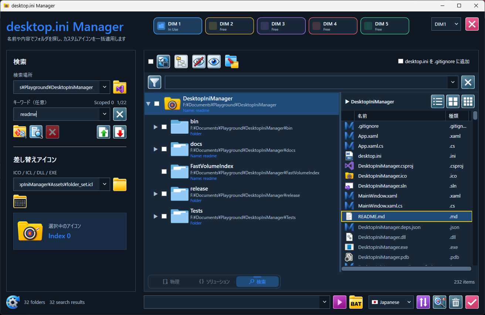
desktop.ini・アイコン管理
ICO／ICL／DLL／EXEからアイコンを選び、チェックしたフォルダーへ適用します。既存設定のリセット、.gitignoreへの追加、空／中身あり・ネットワーク・クラウドの状態表示に対応します。
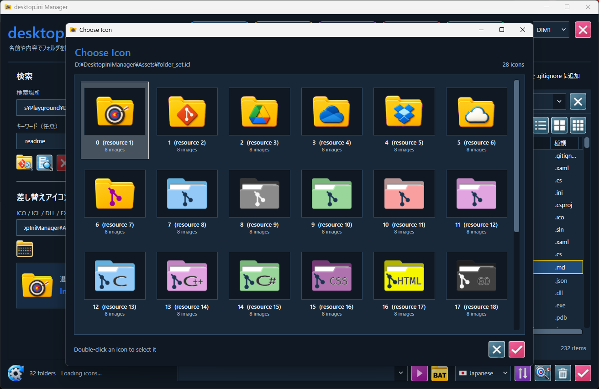
右クリック・Batch File Launcher
右クリックからTarget設定、Explorer表示、tree／tree /f／ファイルリストのエディター出力、Scoped Grepへの引き渡しができます。Batch File Launcherの置換文字は%d%（ディレクトリのフルパス）、%f%（選択ファイルのフルパス）、%n%（ファイル名）です。
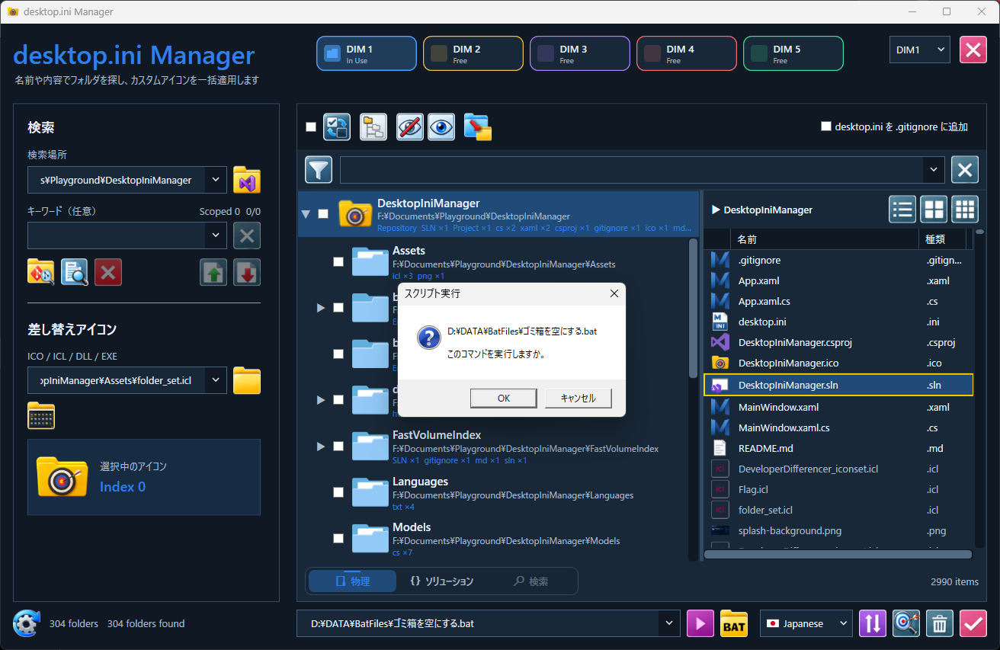
Developer Differencer
Source（黄色）とTarget（青色）のフォルダーを比較します。基準は更新日時とサイズ、日時比較OFFではサイズのみで、ハッシュ比較ではありません。同一・差異あり・片側のみ・obj・bin・チェック済みをフィルター表示します。比較結果は最大20タブです。Source選択時はTarget側に同名の末尾フォルダーがあれば選択します。
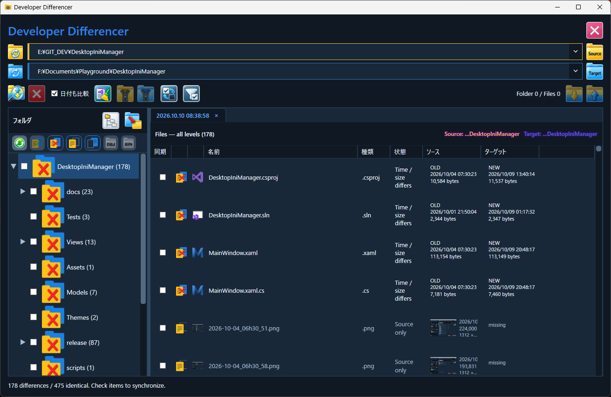
同期・ZIP保存
選択したSource／Targetのファイルを相対構造を維持してZIP保存できます。ZIPアイコンをドラッグするとZIPを作らず構造ごと取り出せます。同期は双方向で、確認画面で方向と内容を確認して実行します。受信側ファイルが削除される場合があります。
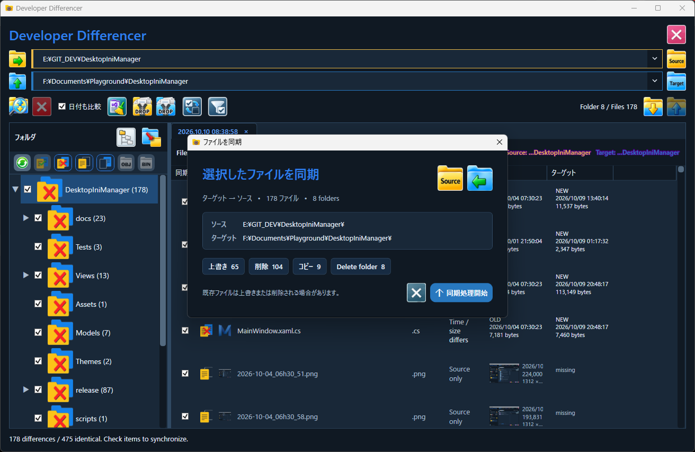
テキストDIFF VIEW
比較結果の対応ファイルをダブルクリックして開きます。Sourceは黄色枠、Targetは青枠。行番号、シンタックスハイライト、中央の差分マップに対応します。「≠」で差分のみ表示、「※」で全行表示に戻します。省略部分は「52 filtered lines」などと表示し、クリックで展開／折りたたみできます。Ctrl+0でも切り替え、最終状態をスロットごとに保存します。編集・マージは外部ツールで行います。
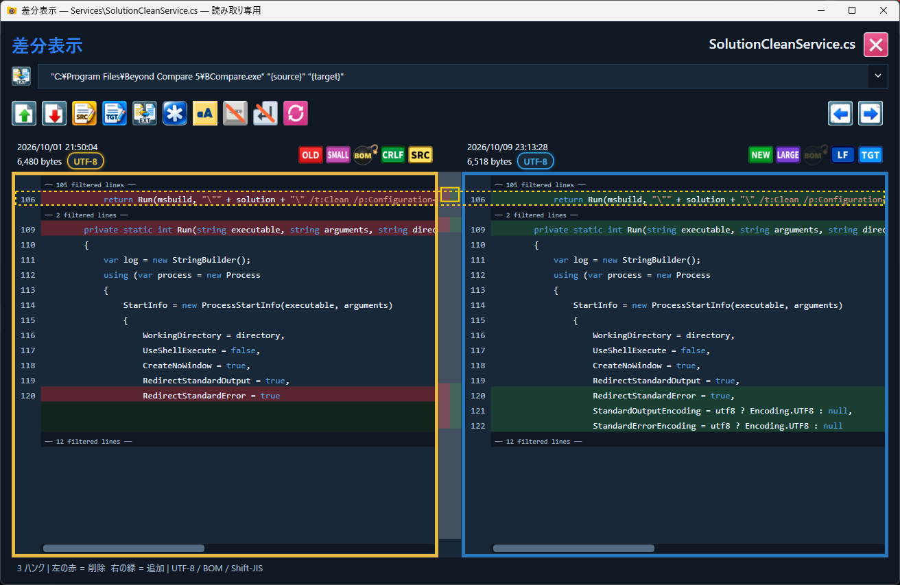
画像DIFF VIEW
画像の場合は画像DIFFモードへ切り替わります。左右の画像をズームスライダー／ホイールで拡大縮小でき、最大160%でピクセルグリッドを表示します。ポインター位置のARGB値と相対座標を表示します。マップは両画像の50%透過重ね合わせであり、差異を自動検出・強調する機能ではありません。
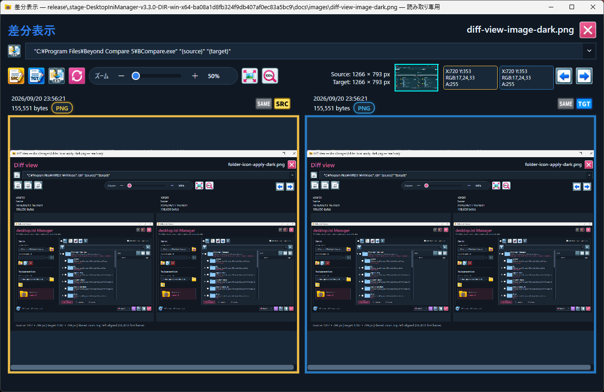
Git difftool連携
DIMは -diff に2ファイルを渡して単体起動できます。以下はGitの .gitconfig 設定例です。DesktopIniManager.exeがPATHにない場合はフルパスに置き換えます。
DesktopIniManager.exe -diff "C:\work\Source.txt" "C:\work\Target.txt"
[diff]
tool = dim
[difftool "dim"]
cmd = DesktopIniManager.exe -diff "$REMOTE" "$LOCAL"
[difftool]
prompt = false
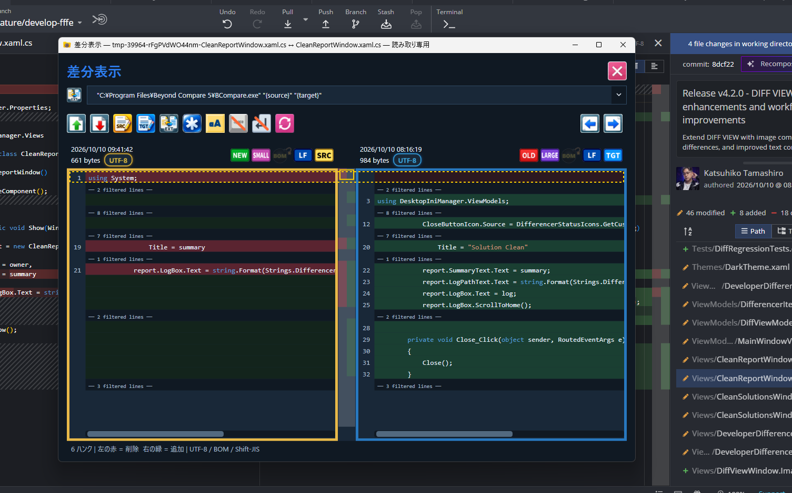
Scoped Grep
複数の検索フォルダーを登録し、チェックで対象を選択します。正規表現、大文字小文字、単語一致に対応します。Code GrepとDocument Grepを分離し、DocumentではExcel（xls／xlsx／xlsm）とPDF内部を検索します。Excelはシート名とセル番地、PDFはページ番号を表示します。スキャンPDFのOCRは行いません。結果はファイル単位でグループ化し、最大20タブ保持します。
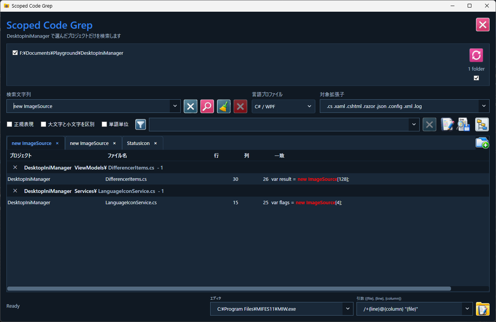
スロット・テーマ・言語
DIM1～DIM5は独立プロセスで、In Useは現在使用中、Freeは新規起動可能、Openは別プロセスを前面表示します。設定と履歴は%LOCALAPPDATA%\DesktopIniManager\dim-Nに保存します。Dark／Light／DIM1～DIM5テーマ、英語・日本語・簡体字中国語・韓国語に対応します。
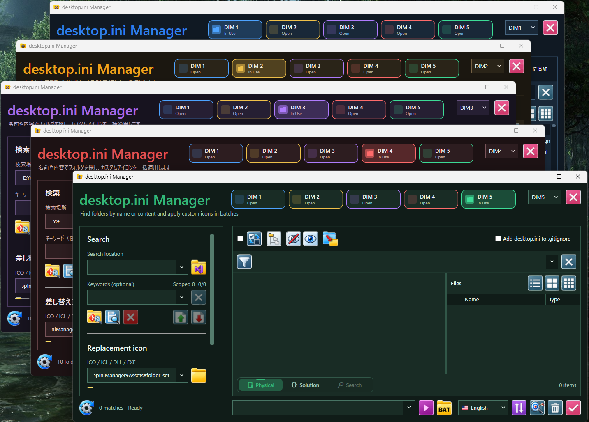
キーボード操作
| 操作 | 動作 |
|---|---|
Ctrl + 1
|
メイン画面へ切り替え |
Ctrl + 2
|
Developer Differencerへ切り替え |
Ctrl + 3
|
Scoped Grepへ切り替え |
Ctrl + Space
|
メイン → Developer Differencer → Scoped Grepを順番に切り替え |
Ctrl + 0
|
DIFF VIEWの全行表示／差分のみ表示を切り替え |
↑ ↓ ← →
|
DIFF VIEWを上下左右へスクロール |
Ctrl + ↑ / ↓
|
前後の差分セクションへ移動 |
Ctrl + ← / →
|
前後の差分ファイルへ移動 |
Page Up / Page Down
|
ページスクロール |
Shift + ホイール / サムホイール
|
横スクロール |
アンインストール・注意事項
DIMをすべて終了し、展開先フォルダーを削除します。設定も削除する場合は%LOCALAPPDATA%\DesktopIniManagerを削除します。フォルダーアイコンは事前にDIMでリセットしてください。走査・検索・比較・閲覧はファイル内容を変更しませんが、同期、アイコン設定、ビルド／Cleanなどは書き込みを伴います。